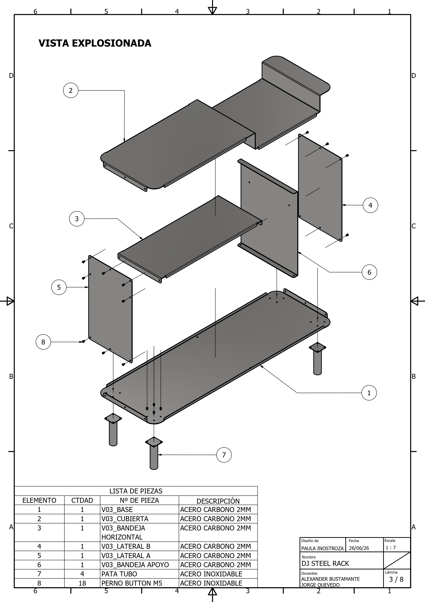
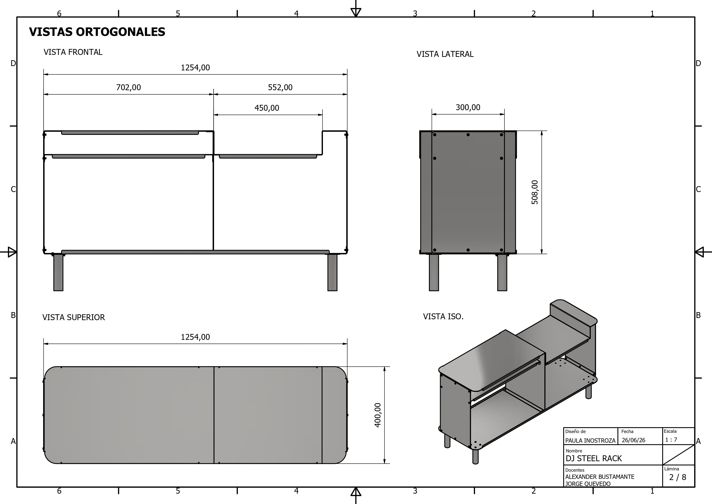
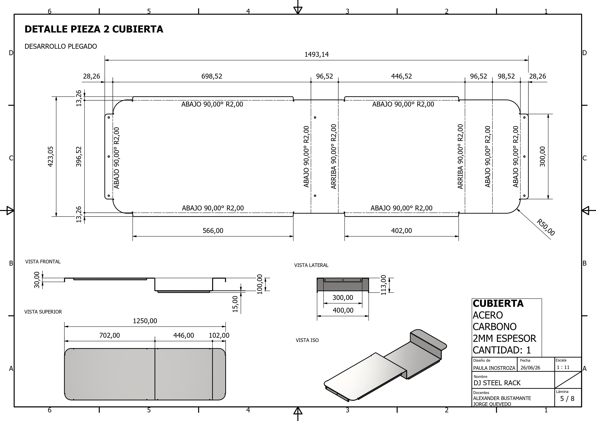

01 DJ Steel Rack
Proyecto individual


Dj Steel Rack nació desde el amor por la música y la necesidad de organizar la colección de vinilos, CD y equipos de sonido en un espacio donde poner ‘play’ fuese una experiencia acogedora.
El diseño combina la personalización para adaptarse a los elementos y disponerlos en espacios de almacenamiento.
El resultado es una pieza que celebra la practicidad.
Examen
Desarrollar un proyecto de índole libre con la condición de utilizar acero carbono y pintura electroestática como materialidades, además de plegado y un sistema de herrajes.


